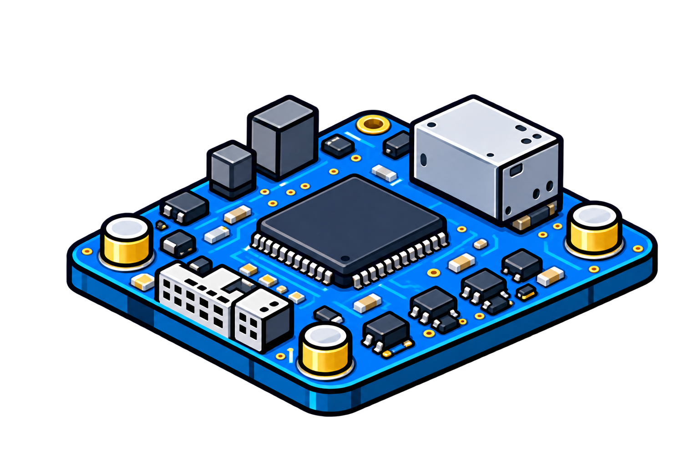
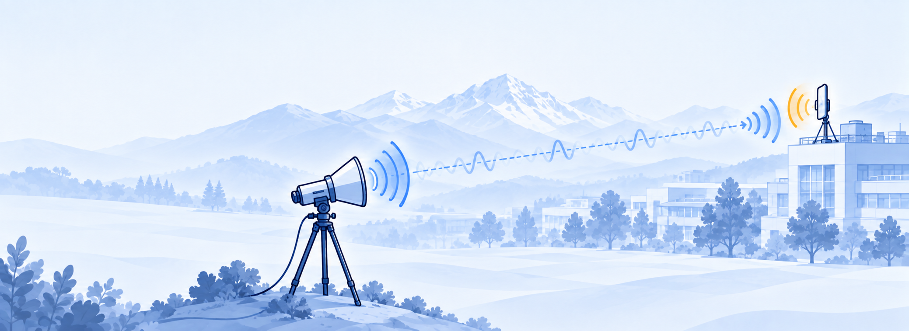

02
Dataset
EM traces from multiple devices, distances and configurations, paired with metadata and reproducible analysis tools.
Explore Dataset →
EM Trace
A Dataset for Remote Electromagnetic Side-Channel Analysis and Evaluation


Screaming Channels explores and benchmarks remote electromagnetic side-channel leakage from real-world devices, enabling reproducible research and practical evaluation.
Learn more →EM traces from multiple devices, distances and configurations, paired with metadata and reproducible analysis tools.
Explore Dataset →Explore example EM traces and analysis results with interactive time-domain and spectral visualizations.
Try the Demo →Methods, acquisition design and evaluation protocols for a reproducible remote side-channel benchmark.
View publication →Use this GitHub Pages-ready template as the public home for your project. Replace the sample copy, connect your paper and dataset links, and publish.
Screaming Channels